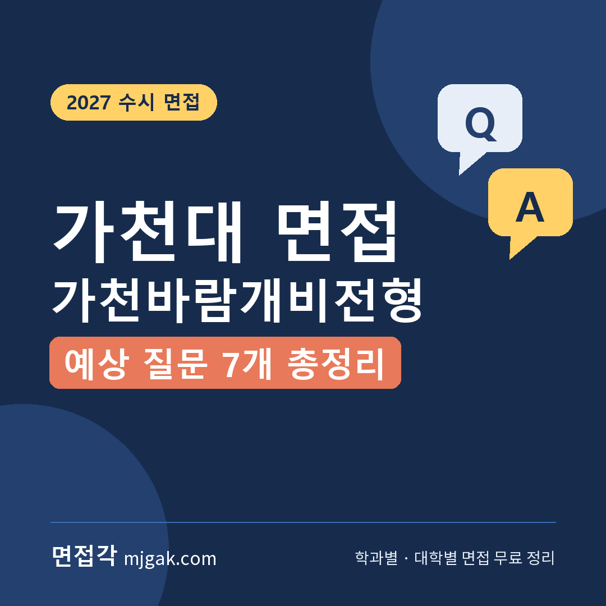
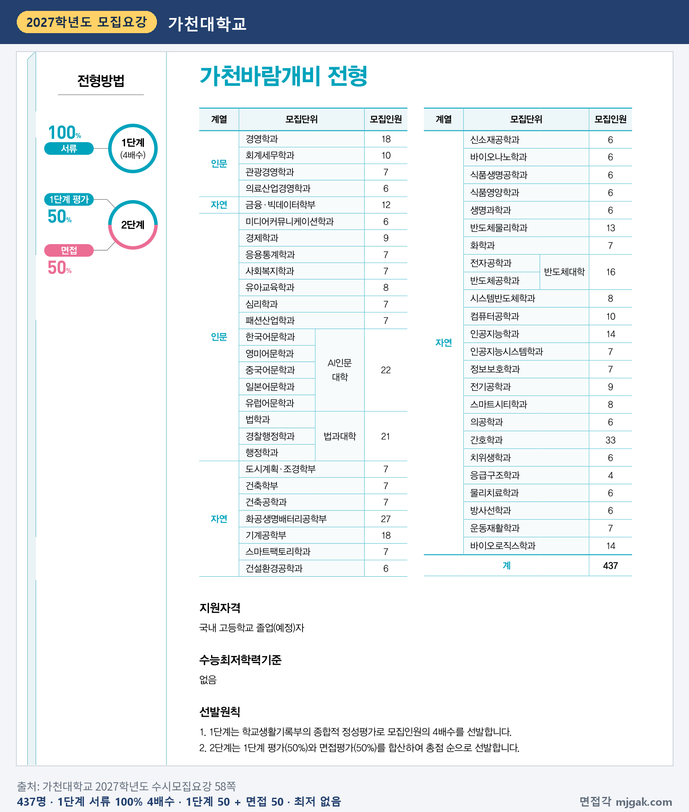
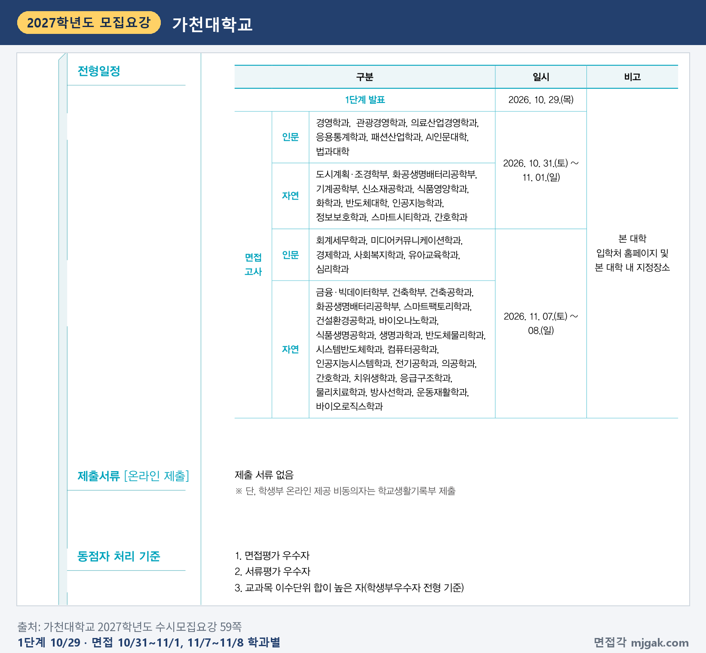
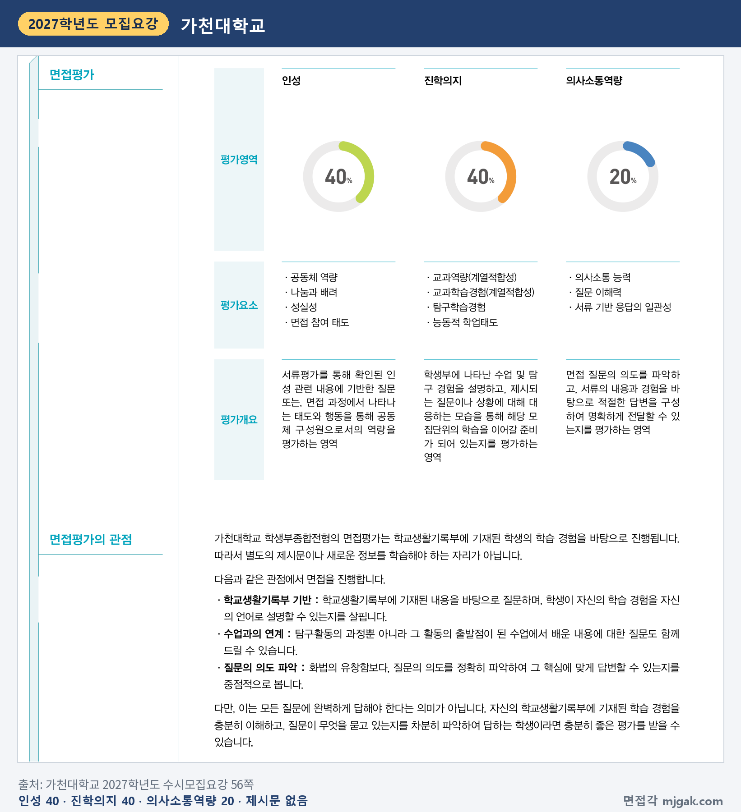
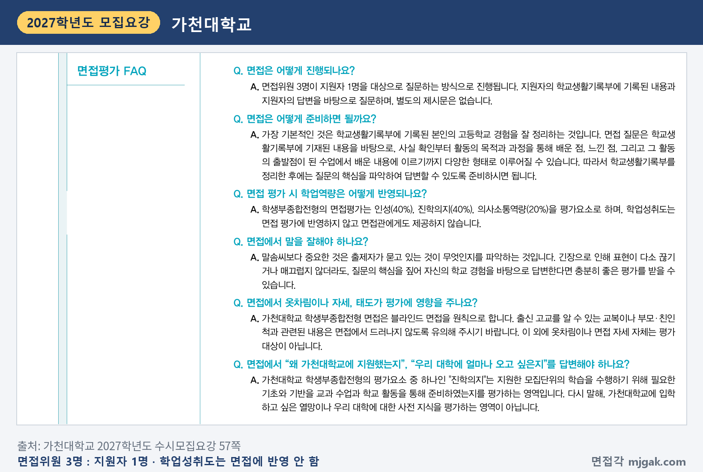
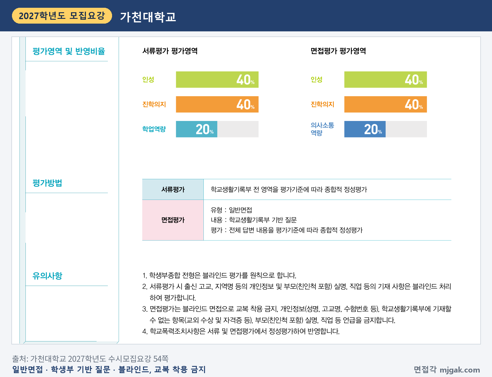
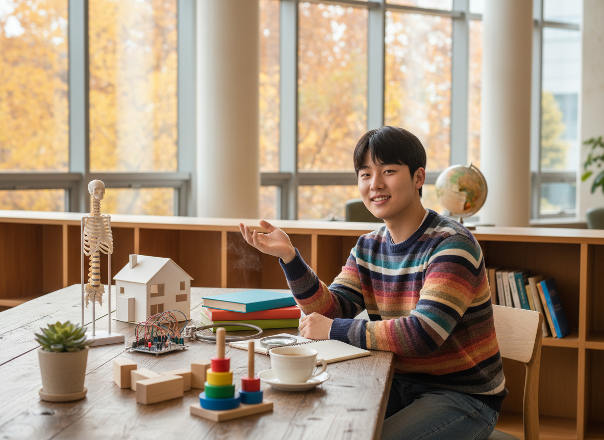
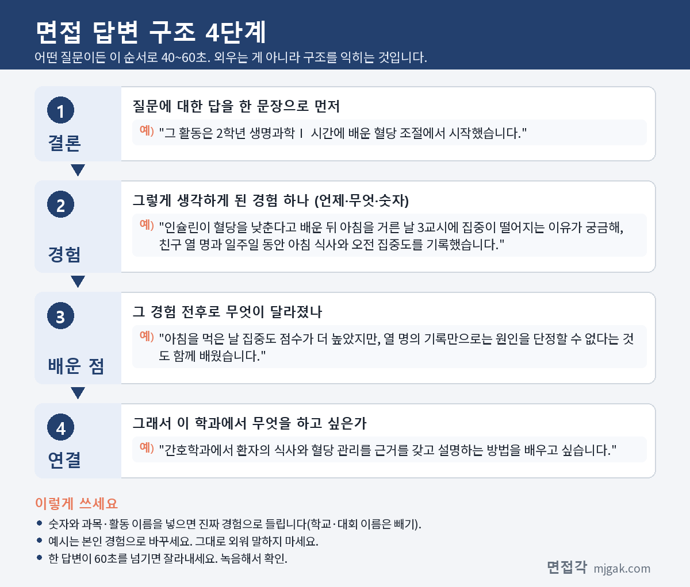
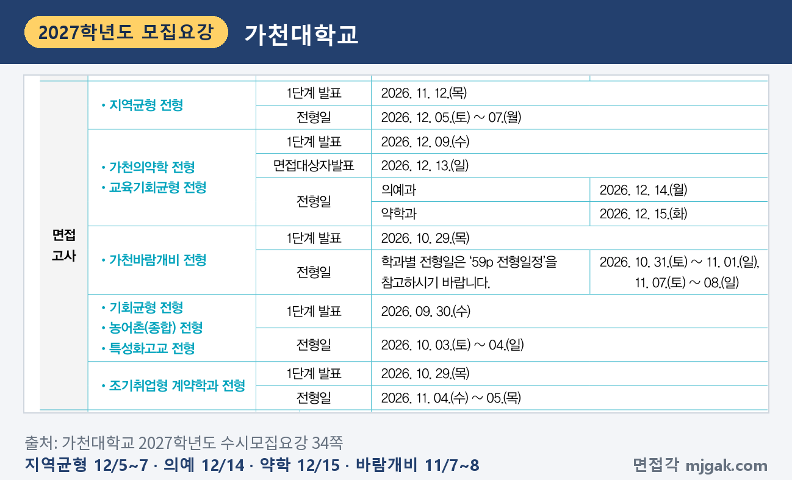
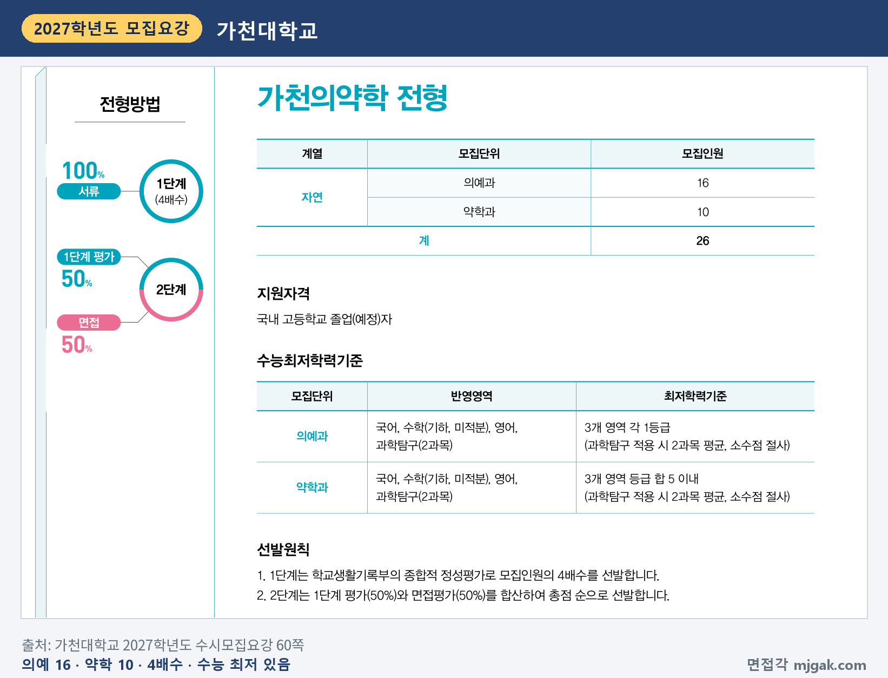

Ctrl+V (서식 유지됨)제목
본문 (이 영역 전체가 복사됩니다)
📷 여기에 이미지 넣기 — 썸네일 — thumb-gachon.png (대표 이미지로 지정)
가천바람개비 면접을 준비하면서 먼저 덜어 낼 것은 "왜 가천대인가" 답변입니다. 가천대 모집요강 FAQ는 면접 평가요소인 '진학의지'가 지원한 모집단위의 학습을 위해 필요한 기초를 교과 수업과 학교 활동으로 준비했는지를 보는 영역이고, 가천대에 입학하고 싶은 열망이나 대학에 대한 사전 지식을 평가하는 영역이 아니라고 적었습니다(57쪽). 1단계 합격자 발표는 10월 29일(목)에 있었고, 면접은 학과별로 10월 31일(토)~11월 1일(일)과 11월 7일(토)~8일(일)로 나뉩니다. 2단계는 1단계 평가 50%와 면접 50%를 합산하고, 면접은 면접위원 3명이 지원자 1명에게 학교생활기록부를 바탕으로 질문하며 제시문은 없습니다. 이 글은 가천대학교 2027학년도 수시모집요강으로 전형 방법, 일정, 면접 방식, 예상 질문 7개, 준비 순서를 정리하고 지역균형·의예과·약학과는 한 구역으로 묶었습니다. 11월 7일·8일에 면접을 보는 가천바람개비 1단계 합격자와 12월에 면접이 있는 지역균형·가천의약학 지원자가 읽으시면 됩니다.
1. 가천바람개비전형, 2027학년도에는 어떻게 보나
가천바람개비전형은 학생부종합전형으로 437명을 뽑습니다. 인원이 많은 곳은 간호학과 33명, 화공생명배터리공학부 27명, AI인문대학 22명, 법과대학 21명, 경영학과·기계공학부 각 18명입니다. 지원자격은 국내 고등학교 졸업(예정)자이고, 수능최저학력기준은 없습니다(58쪽). 제출 서류는 없고, 학생부 온라인 제공에 동의하지 않은 경우에만 학교생활기록부를 냅니다(59쪽).
📷 여기에 이미지 넣기 — 캡처 1 — 가천대학교 2027학년도 수시모집요강 58쪽: gachon-2027-baram-units.png
1단계는 학교생활기록부의 종합적 정성평가로 모집인원의 4배수를 뽑고, 2단계는 1단계 평가 50%와 면접평가 50%를 합산해 총점 순으로 뽑습니다(58쪽). 2단계 동점자는 면접평가 우수자, 서류평가 우수자, 교과목 이수단위 합이 높은 사람(학생부우수자 전형 기준) 순으로 가립니다(59쪽). 면접에 결시하면 사정대상에서 제외되어 불합격입니다(89쪽).
2. 언제 보나: 1단계 발표 9일 뒤 두 번째 면접
1단계 합격자 발표는 10월 29일(목)이었습니다. 면접은 학과별로 두 묶음입니다(59쪽).
- 10월 31일(토)~11월 1일(일): 경영학과, 관광경영학과, 의료산업경영학과, 응용통계학과, 패션산업학과, AI인문대학, 법과대학, 도시계획·조경학부, 기계공학부, 신소재공학과, 식품영양학과, 화학과, 반도체대학, 인공지능학과, 정보보호학과, 스마트시티학과
- 11월 7일(토)~8일(일): 회계세무학과, 미디어커뮤니케이션학과, 경제학과, 사회복지학과, 유아교육학과, 심리학과, 금융·빅데이터학부, 건축학부, 건축공학과, 스마트팩토리학과, 건설환경공학과, 바이오나노학과, 식품생명공학과, 생명과학과, 반도체물리학과, 시스템반도체학과, 컴퓨터공학과, 인공지능시스템학과, 전기공학과, 의공학과, 치위생학과, 응급구조학과, 물리치료학과, 방사선학과, 운동재활학과, 바이오로직스학과
1단계 발표에서 11월 7일까지는 9일입니다(이 글에서 계산한 값). 화공생명배터리공학부와 간호학과는 두 묶음에 모두 적혀 있습니다(59쪽). 내 날짜는 입학처 홈페이지의 세부 일정에서 확인하세요. 세부 일정은 개별 통지하지 않고, 전형일은 지원자 수에 따라 바뀔 수 있습니다(34쪽). 합격자 발표는 수능일 이전 11월 14일(토), 수능일 이후 12월 18일(금)로 나뉘어 있고(37쪽), 전형별 구분은 따로 적혀 있지 않습니다.
📷 여기에 이미지 넣기 — 캡처 2 — 가천대학교 2027학년도 수시모집요강 59쪽: gachon-2027-baram-schedule.png
3. 면접은 어떻게 보나
면접 유형은 일반면접, 내용은 학교생활기록부 기반 질문이고, 전체 답변 내용을 평가기준에 따라 종합적으로 정성평가합니다(54쪽). 면접위원 3명이 지원자 1명에게 학교생활기록부에 기록된 내용과 지원자의 답변을 바탕으로 질문하며, 별도의 제시문은 없습니다(57쪽). 면접 시간은 모집요강에 적혀 있지 않습니다.
평가영역과 반영비율은 다음과 같습니다(56쪽).
- 인성 40%: 공동체 역량, 나눔과 배려, 성실성, 면접 참여 태도
- 진학의지 40%: 교과역량(계열적합성), 교과학습경험(계열적합성), 탐구학습경험, 능동적 학업태도
- 의사소통역량 20%: 의사소통 능력, 질문 이해력, 서류 기반 응답의 일관성
모집요강은 탐구활동의 과정뿐 아니라 그 활동의 출발점이 된 수업에서 배운 내용도 질문할 수 있다고 밝혔습니다(56쪽). 학업성취도는 면접 평가에 반영하지 않고 면접관에게도 제공하지 않습니다(57쪽).
📷 여기에 이미지 넣기 — 캡처 3 — 가천대학교 2027학년도 수시모집요강 56쪽: gachon-2027-baram-eval.png
📷 여기에 이미지 넣기 — 캡처 4 — 가천대학교 2027학년도 수시모집요강 57쪽: gachon-2027-baram-faq.png
면접은 블라인드 면접입니다. 교복을 입을 수 없고, 성명·고교명·수험번호 같은 개인정보, 교외 수상과 자격증처럼 학생부에 적을 수 없는 항목, 부모(친인척 포함)의 실명과 직업을 말하면 안 됩니다. 학교폭력 조치사항은 서류와 면접평가에서 정성평가로 반영합니다(54쪽). 고사 때는 신분증(주민등록증, 운전면허증, 기간 만료 전의 여권 등)과 수험표를 가져가야 합니다(34쪽).
📷 여기에 이미지 넣기 — 캡처 5 — 가천대학교 2027학년도 수시모집요강 54쪽: gachon-2027-baram-blind.png
4. FAQ에서 나올 예상 질문 7개와 답변법
가천대는 모집요강에 면접 질문 예시를 공개하지 않았습니다. 대신 FAQ에서 면접 질문이 학생부 내용의 사실 확인부터 활동의 목적과 과정, 배운 점, 느낀 점, 그 활동의 출발점이 된 수업에서 배운 내용까지 다양할 수 있다고 안내합니다(57쪽). 아래 7개는 이 안내와 평가요소로 정리한 예상 질문입니다. "○○"에는 내 학생부의 수업과 활동이 들어갑니다. 예시 답변은 11월 7일·8일 면접 학과를 바꿔 쓴 가상의 예시이니 본인 경험으로 바꾸세요.
▶ 질문 1. 학생부의 ○○ 탐구는 어떤 수업에서 시작됐나요? (진학의지: 탐구학습경험)
왜 묻나: 모집요강이 "활동의 출발점이 된 수업에서 배운 내용"도 질문할 수 있다고 밝혔습니다(56·57쪽). 탐구 결과보다 출발한 수업 내용을 먼저 말할 수 있어야 합니다.
답변 구조: 출발한 수업 한 문장 → 생긴 궁금증과 해 본 일 → 배운 점 → 학과에서 이어 갈 공부.
답변 예시 (간호학과):
"그 활동은 2학년 생명과학Ⅰ 시간에 배운 혈당 조절에서 시작했습니다. 인슐린이 혈당을 낮춘다고 배운 뒤 아침을 거른 날 3교시에 집중이 떨어지는 이유가 궁금해, 친구 열 명과 일주일 동안 아침 식사와 오전 집중도를 기록했습니다. 아침을 먹은 날 집중도 점수가 더 높았지만, 열 명의 기록만으로는 원인을 단정할 수 없다는 것도 함께 배웠습니다. 간호학과에서 환자의 식사와 혈당 관리를 근거를 갖고 설명하는 방법을 배우고 싶습니다."
주의: 수업에서 배운 개념을 다시 물을 수 있으니 교과서의 해당 부분을 한 번 더 읽어 두세요.
▶ 질문 2. 그 활동에서 본인이 직접 한 일은 무엇인가요? (사실 확인, 의사소통역량: 서류 기반 응답의 일관성)
왜 묻나: FAQ가 말한 첫 단계인 '사실 확인' 질문입니다. 학생부 기록과 내 답이 맞아야 '서류 기반 응답의 일관성'과 이어집니다.
답변 구조: 내가 맡은 일 한 문장 → 막힌 지점 → 해결 방법 → 결과.
답변 예시 (컴퓨터공학과):
"저는 정보 시간 모둠 프로젝트에서 급식 잔반 기록 프로그램의 입력 화면을 맡았습니다. 처음에는 친구들이 남긴 양을 직접 숫자로 적게 했더니 사람마다 기준이 달라 기록이 들쭉날쭉했습니다. 그래서 '거의 다 먹음, 반쯤 남김, 거의 남김' 세 단추로 바꿨고, 2주 동안 빠진 기록이 눈에 띄게 줄었습니다. 입력을 쉽게 만드는 것이 데이터의 질을 좌우한다는 것을 배웠습니다."
주의: "저희 모둠은"으로 시작하면 내 역할이 흐려집니다. "저는 ○○을 맡았습니다"로 시작하세요.
▶ 질문 3. 그 활동으로 배운 점과 그 뒤 달라진 것은 무엇인가요? (진학의지: 능동적 학업태도)
왜 묻나: FAQ의 "배운 점, 느낀 점" 단계입니다. 배운 점만 말하지 말고 그 뒤 실제로 바꾼 공부나 행동을 붙이세요.
답변 구조: 배운 점 한 문장 → 계기가 된 장면 → 그 뒤 바꾼 것 → 학과와 연결.
답변 예시 (경제학과):
"가장 크게 배운 점은 가격이 바뀌면 사람들이 생각보다 빨리 움직인다는 것입니다. 경제 시간에 수요 법칙을 배운 뒤 학교 매점에서 묶음 할인 행사 전후 일주일의 음료 판매량을 매점 선생님께 여쭤봤는데, 묶음 상품만 두 배 가까이 팔렸습니다. 그 뒤 신문 기사를 읽을 때 가격 변화와 사람들의 반응을 표로 정리하는 습관이 생겼습니다. 경제학과에서 이런 반응을 자료로 분석하는 방법을 배우고 싶습니다."
주의: "많이 배웠습니다"로 끝내지 말고, 무엇을 배웠는지 첫 문장에 한 줄로 말하세요.
📷 여기에 이미지 넣기 — 이미지 1 — 제미나이 생성: 늦가을 캠퍼스 라운지에서 청진기·브레드보드와 LED·건축 모형·나무 블록·쌓기 고리·작은 화분 옆에서 답하는 남학생(실사) / "제미나이 프롬프트 1" · gem-gachon-1.png
(AI로 만든 이미지로, 실제 캠퍼스와 다를 수 있습니다)
▶ 질문 4. 지원 학과 공부를 위해 어떤 과목을 어떻게 공부했나요? (진학의지: 교과역량(계열적합성))
왜 묻나: 진학의지는 지원 모집단위의 학습에 필요한 기초를 교과 수업과 학교 활동으로 준비했는지를 보는 영역입니다(55·57쪽). 과목 이름과 공부 방법을 함께 말하세요.
답변 구조: 과목 한 문장 → 어려웠던 개념 → 공부 방법 → 학과에서 쓸 곳.
답변 예시 (반도체물리학과):
"반도체물리학과를 생각하며 가장 공들인 과목은 물리학Ⅰ입니다. 에너지띠 개념이 그림만으로는 이해되지 않아, 도체와 절연체, 반도체의 차이를 제 말로 한 문단씩 써 보고 선생님께 확인받았습니다. 그다음 다이오드에 전압을 반대로 걸면 전류가 거의 흐르지 않는 실험을 하며 개념을 확인했습니다. 대학에서 고체물리를 배울 때 이렇게 개념을 글로 정리하는 방법을 이어 가겠습니다."
주의: 진학의지는 가천대에 입학하고 싶은 열망을 보는 영역이 아닙니다(57쪽). 각오 대신 공부한 장면을 말하세요.
▶ 질문 5. 학생부를 보면 관심 분야가 바뀐 것 같은데, 이유가 무엇인가요? (의사소통역량: 서류 기반 응답의 일관성)
왜 묻나: 학생부에 학년별로 다른 관심이 보이면 그 흐름을 설명할 수 있어야 합니다. 서류평가 FAQ는 진로가 바뀔 수 있다는 점을 충분히 이해하고 평가한다고 적었습니다(57쪽).
답변 구조: 바뀐 방향 한 문장 → 바뀐 계기 → 앞 관심에서 이어진 것 → 지금의 계획.
답변 예시 (심리학과):
"1학년 때는 광고에 관심이 있었는데, 2학년에 사람이 왜 그렇게 선택하는지가 더 궁금해져 심리학으로 관심이 옮겨 갔습니다. 계기는 사회·문화 시간에 같은 질문도 순서를 바꾸면 설문 결과가 달라진다는 내용을 배운 것이었습니다. 광고 문구를 분석하던 습관이 사람의 판단을 관찰하는 데 그대로 이어졌습니다. 심리학과에서 실험으로 판단의 원리를 확인하는 공부를 하고 싶습니다."
주의: 바뀐 것을 변명하지 말고, 앞 관심에서 무엇을 가지고 왔는지 말하세요.
▶ 질문 6. 모둠이나 학급에서 다른 사람을 도운 경험이 있나요? (인성: 공동체 역량, 나눔과 배려)
왜 묻나: 인성 40%의 평가요소입니다. 인성 영역은 서류평가로 확인된 인성 관련 내용에 기반해 질문할 수 있습니다(56쪽).
답변 구조: 상황 한 문장 → 내가 한 일 → 상대의 변화 → 그 경험으로 바뀐 점.
답변 예시 (사회복지학과):
"2학년 때 전학 온 친구가 수행평가 모둠을 찾지 못하고 있어 제 모둠에 함께하자고 했습니다. 처음에는 의견을 거의 말하지 않아서, 회의 전에 메신저로 생각을 먼저 받아 회의 때 제가 그 의견을 소개했습니다. 두 번째 과제부터는 그 친구가 직접 발표를 맡았습니다. 도움이 필요한 사람에게는 먼저 말할 수 있는 통로를 만들어 주는 것이 중요하다는 것을 배웠습니다."
주의: 착한 일을 했다는 말보다, 상대가 어떻게 달라졌는지를 넣으세요.
▶ 질문 7. 방금 "꾸준히 했다"고 했는데, 얼마나 어떻게 했나요? (인성: 성실성 / 의사소통역량: 질문 이해력)
왜 묻나: 면접위원이 지원자의 답변을 바탕으로도 질문한다고 밝혔습니다(57쪽). 앞 답변의 한 단어를 짚는 질문에는 묻는 것에 첫 문장으로 답하세요.
답변 구조: 기간과 횟수 한 문장 → 이어 가기 어려웠던 때 → 그때 한 일 → 지금 남은 습관.
답변 예시 (물리치료학과):
"1학년 3월부터 3학년 1학기까지 매주 화요일 점심시간에 체육부 활동으로 친구들의 스트레칭을 도왔습니다. 시험 기간에는 나오는 친구가 줄어서, 5분짜리 동작 세 개만 하는 짧은 순서를 따로 만들었습니다. 그 뒤로는 시험 기간에도 열 명 안팎이 꾸준히 나왔습니다. 하기 쉬운 방법이어야 오래 간다는 것을 배웠고, 환자 운동 지도에도 이 생각을 가져가고 싶습니다."
주의: 질문이 잘 이해되지 않으면 "○○을 여쭤보신 것이 맞을까요?"라고 확인해도 됩니다.
5. 답변은 이 4단계로 만드세요
어떤 질문이든 결론 → 경험 → 배운 점 → 연결 순서로 40~60초 안에 말하세요. 아래 도식은 질문 1을 4단계로 쪼갠 것입니다.
📷 여기에 이미지 넣기 — 도식 — structure-gachon.png
6. 지역균형·의예과·약학과는 날짜가 다릅니다
지역균형전형(학생부교과)은 358명으로 자유전공 321명, 간호학과 13명, 유아교육학과·치위생학과·물리치료학과·방사선학과 각 6명입니다. 고등학교장의 추천을 받아야 하고, 1단계 학생부교과 100%로 5배수를 뽑은 뒤 2단계에서 1단계 평가 50%와 면접 50%를 합산합니다. 수능 최저는 없고, 1단계 발표는 11월 12일(목), 면접은 12월 5일(토)~7일(월)입니다(44쪽). 면접 평가는 인성 40%, 수업충실도 및 학업동기 40%(교과 이해도, 능동적 학습태도, 수업 참여 태도, 자기주도적 학업 동기), 의사소통역량 20%이고, 2단계 동점자는 1단계 성적, 면접평가, 영어교과 백분위 순으로 가립니다(45쪽).
📷 여기에 이미지 넣기 — 캡처 6 — 가천대학교 2027학년도 수시모집요강 34쪽: gachon-2027-interview-dates.png
가천의약학전형은 의예과 16명, 약학과 10명이고, 1단계 서류 100% 4배수, 2단계 1단계 평가 50% + 면접 50%입니다(60쪽). 수능 최저는 국어, 수학(기하, 미적분), 영어, 과학탐구(2과목) 중 의예과가 3개 영역 각 1등급, 약학과가 3개 영역 등급 합 5 이내입니다(과학탐구는 2과목 평균, 소수점 절사)(60쪽). 1단계 발표는 12월 9일(수), 수능 최저를 충족한 사람만 12월 13일(일)에 면접대상자로 발표하고, 면접은 의예과 12월 14일(월), 약학과 12월 15일(화)입니다(61쪽). 면접은 가천바람개비와 같은 학생부종합 면접 기준을 따릅니다(54쪽). 교육기회균형전형 약학과(3명, 3개 영역 등급 합 6 이내)도 12월 15일(화)에 면접을 봅니다(66·67쪽).
📷 여기에 이미지 넣기 — 캡처 7 — 가천대학교 2027학년도 수시모집요강 60쪽: gachon-2027-yakmed.png
한의예과는 면접이 있는 수시 전형의 모집단위 표(44·50·58·60·62·64·66·70쪽)에 없습니다. 조기취업형 계약학과 전형 면접은 11월 4일(수)~5일(목)입니다(34쪽).
7. 10월 31일(토)부터 11월 7일 면접까지 준비 순서
10월 31일(토) ~ 11월 2일(월): 학생부를 처음부터 읽고 탐구 활동 세 개를 고릅니다. 활동마다 "출발한 수업, 목적, 내가 한 일, 배운 점, 느낀 점"을 한 줄씩 적습니다(57쪽 FAQ 항목).
11월 3일(화) ~ 4일(수): 활동이 출발한 수업의 교과서 부분을 다시 읽습니다. 질문 1·2·4의 답을 4단계로 만듭니다.
11월 5일(목): 가족 세 명 앞에서 모의 면접을 하고 녹음합니다. 면접위원이 3명이니 세 사람이 돌아가며 묻게 합니다. 60초를 넘는 답에 표시합니다.
11월 6일(금): 입학처 홈페이지에서 내 학과의 세부 일정과 고사장을 확인하고, 수험표와 신분증을 챙깁니다. 새 답변은 만들지 않습니다.
11월 7일(토) ~ 8일(일), 면접: 교복은 입지 않고, 이름이나 학교를 말하지 않습니다(54쪽).
11월 14일(토) 또는 12월 18일(금): 합격자 발표(37쪽). 입학처 홈페이지에서 직접 확인합니다.
8. 가천대 가천바람개비 면접 자주 묻는 것들
Q. "왜 가천대에 지원했나요"를 꼭 준비해야 하나요?
A. 모집요강 FAQ는 진학의지가 가천대 입학 열망이나 대학에 대한 사전 지식을 평가하는 영역이 아니라고 적었습니다(57쪽). 지원 학과와 이어지는 수업·탐구 경험을 먼저 준비하세요.
Q. 내신 성적을 면접에서 묻나요?
A. 학업성취도는 면접 평가에 반영하지 않고 면접관에게도 제공하지 않습니다(57쪽).
Q. 제시문을 읽고 푸는 문제가 나오나요?
A. 별도의 제시문은 없습니다. 모집요강은 면접이 새로운 정보를 학습해야 하는 자리가 아니라고 밝혔습니다(56·57쪽).
Q. 면접 복장은 어떻게 하나요?
A. 교복은 입지 않습니다(54쪽). FAQ는 그 밖의 옷차림이나 면접 자세 자체는 평가 대상이 아니라고 적었습니다(57쪽).
Q. 다른 전형에 같이 지원할 수 있나요?
A. 가천대 수시 안의 전형 간 복수지원은 가능하고, 같은 전형 안에서 모집단위 간 복수지원은 안 됩니다(89쪽).
9. 면접 전날 체크리스트
□ 탐구 활동 세 개마다 출발한 수업 내용을 한 문장으로 말할 수 있다
□ 활동마다 "내가 한 일"을 학생부 기록과 같게 말할 수 있다
□ 배운 점과 그 뒤 달라진 것을 하나씩 말할 수 있다
□ 지원 학과와 이어지는 과목 하나와 공부 방법을 말할 수 있다
□ 녹음으로 60초를 넘는 답을 줄였다
□ 입학처 홈페이지에서 내 학과의 면접 날짜와 고사장을 확인했다
□ 신분증과 수험표를 챙겼고, 교복은 입지 않는다
10. 같은 시기에 면접 보는 대학
가천대와 같이 지원했다면 이어서 보세요.
▷ 고려대 계열적합전형 면접 총정리 (11월 7일·8일)
▷ 강남대 학교생활우수자전형2 면접 총정리 (11월 7일~8일)
11. 함께 보면 좋은 글
가천바람개비 면접은 학생부에 적힌 탐구가 어느 수업에서 시작됐고, 그 과정에서 무엇을 배웠는지를 내 말로 설명하는 자리입니다.
※ 이 글의 내용은 가천대학교 2027학년도 수시모집요강에서 인용했습니다. 괄호 안 쪽수는 모집요강에 인쇄된 쪽수입니다. 예상 질문은 모집요강의 평가요소와 FAQ를 바탕으로 정리한 것이며 대학이 공개한 질문이 아닙니다. 학과별 세부 면접 일정과 고사장은 가천대 입학처 홈페이지 안내를 꼭 확인하세요.
가천대를 포함한 76개 대학의 2027학년도 면접 정보와 71개 학과별 면접 질문·답변 예시, 대학이 공개한 실제 면접 기출을 무료로 정리한 사이트입니다. 회원가입 없이 바로 볼 수 있고, 질문을 무작위로 뽑아 60초 타이머로 연습하는 모의 면접도 있습니다.
태그 (#은 에디터가 자동으로 붙이므로 그대로 붙여 넣어도 됩니다)
넣을 이미지 목록 (docs/promo/img 폴더)










제미나이 프롬프트 1 — 늦가을 캠퍼스 라운지에서 청진기·브레드보드와 LED·건축 모형·나무 블록·쌓기 고리·작은 화분 옆에서 답하는 남학생(실사) (4:3) — 제미나이에 그대로 붙여 넣어 이미지를 만드세요